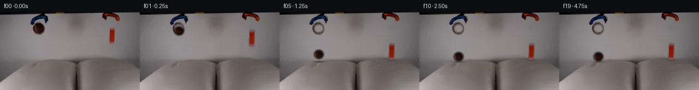

![首帧]()

Round 00
2026-11-04T17:36:20.668885+00:00像素候选变化代码 +275/−0inspection 更新
pixels 5345c0f87b327a11 · code d86885f859170757
查看本轮 generate.py 真实 diff
--- previous/generate.py
+++ current/generate.py
@@ -0,0 +1,275 @@
+"""PixelWorld-Text case_0002: two grabber tools release a brown tennis ball
+and an orange block above two pillows on a table.
+
+Generates 20 RGB frames (256x144, 4 fps). Frame 00 is byte-identical to
+first_frame.png. Method: analytic alpha sprites are cut from the first
+frame over a smooth reconstructed wall (degree-5 polynomial base plus
+diffusion-filled residual); objects fall under constant gravity with
+inelastic pillow bounces; claw fingers open by small shears; soft contact
+shadows are painted on the pillows. All operations are local Python pixel
+math (numpy/scipy/opencv)."""
+from pathlib import Path
+import numpy as np
+import cv2
+from PIL import Image
+from scipy.ndimage import gaussian_filter
+import artifact_io
+
+CASE = Path(__file__).parent
+N = 20
+DT = 0.25
+G = 144.0 # px/s^2 (screen space)
+
+# ---------------------------------------------------------------- geometry
+BALL0 = dict(cx=71.4, cy=29.9, rx=11.0, ry=10.4)
+BALL_REST_Y = 82.0
+BALL_E = 0.32
+BLOCK_REST_Y = 73.0
+BLOCK_E = 0.12
+
+F0 = np.array(Image.open(CASE / 'first_frame.png').convert('RGB')).astype(np.float32)
+H, Wd = F0.shape[:2]
+YY, XX = np.mgrid[0:H, 0:Wd]
+LUM = F0.mean(2)
+SAT = F0.max(2) - F0.min(2)
+Ri, Gi, Bi = F0[..., 0].astype(int), F0[..., 1].astype(int), F0[..., 2].astype(int)
+
+
+def ball_coverage(cx, cy):
+ """Anti-aliased alpha of the ball disk (4x4 SSAA)."""
+ a = np.zeros((H, Wd), np.float32)
+ for sy in np.linspace(-0.375, 0.375, 4):
+ for sx in np.linspace(-0.375, 0.375, 4):
+ d2 = (((XX - (cx + sx)) / BALL0['rx']) ** 2 +
+ ((YY - (cy + sy)) / BALL0['ry']) ** 2)
+ a += np.clip(1.35 * (1.0 - d2), 0, 1)
+ return a / 16.0
+
+
+# --------------------------------------------------------- wall background
+def build_wall():
+ """Smooth wall colour field: degree-5 polynomial fit to clean wall pixels
+ plus a diffusion-filled residual, so occluded areas continue the wall."""
+ k = np.zeros((H, Wd), bool)
+ k[9:83, :] = True
+ k &= (LUM > 80) & (LUM < 165) & (SAT < 15)
+ k[:, 40:95] = False # left tool box
+ k[:, 176:228] = False # right tool box
+ ys, xs = np.where(k)
+ xf = (XX / Wd - 0.5).ravel()
+ yf = (YY / H - 0.5).ravel()
+
+ def basis(X, Y):
+ deg = 5
+ return np.stack([X ** i * Y ** j
+ for i in range(deg + 1) for j in range(deg + 1 - i)], 1)
+
+ A = basis(xs / Wd - 0.5, ys / H - 0.5)
+ Aw = basis(xf, yf)
+ pred = np.empty((H, Wd, 3), np.float32)
+ res_known = np.zeros((H, Wd, 3), np.float32)
+ w = k.astype(np.float32)
+ for c in range(3):
+ co = np.linalg.lstsq(A, F0[ys, xs, c], rcond=None)[0]
+ pred[..., c] = (Aw @ co).reshape(H, Wd)
+ res_known[..., c] = (F0[..., c] - pred[..., c]) * k
+ # diffuse the residual into non-wall pixels
+ rf = res_known.copy()
+ for _ in range(80):
+ sm = gaussian_filter(rf * w[..., None], (5, 5, 0))
+ wm = gaussian_filter(w[..., None], (5, 5, 0)) + 1e-6
+ rf = np.where(k[..., None], rf, sm / wm)
+ wall = pred + rf
+ return np.clip(wall, 0, 255)
+
+
+WALL = build_wall()
+
… diff truncated; 188 more lines …